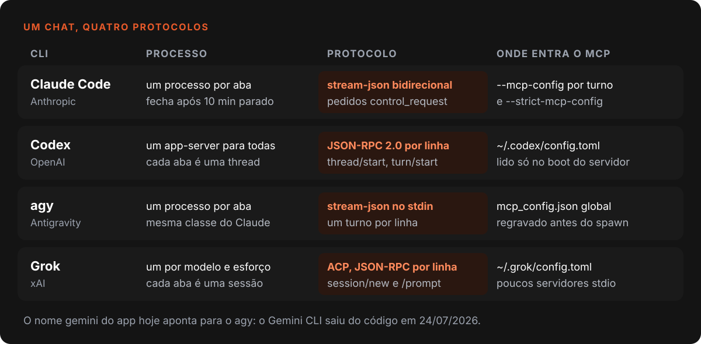
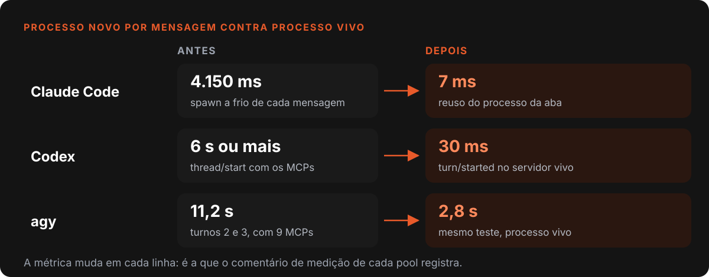
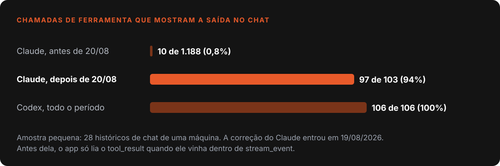
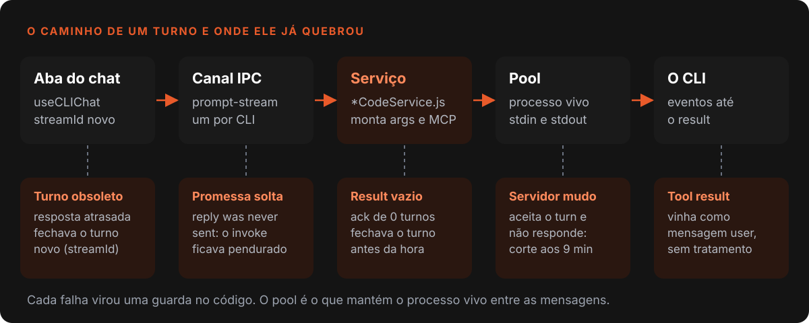

Nardoto
NardotoCinco IAs num chat só: o protocolo de cada CLI por dentro
Como o chat do Nardoto Studio conversa com Claude Code, Codex, agy e Grok pelo CLI de cada um: o protocolo, o que mudou de um para outro e o que quebrou.

O chat do Nardoto Studio não chama a API de nenhum modelo. Ele abre o CLI que a pessoa já instalou e logou (Claude Code, Codex, Antigravity ou Grok) e conversa com ele como um terminal sem tela. Cada um traz ferramentas, sessões e MCP próprios, e o app não reimplementa agente nenhum.
O problema é que não existe "o protocolo dos CLIs". Cada um fala um dialeto, e cada dialeto quebra de um jeito. Este post é o mapa deles e do que me custou tempo. Completa o post sobre MCP, que conta o outro lado: a IA pilotando o app.
O que o código diz hoje (29/10/2026)
- Quatro serviços (Claude, Codex, agy e Grok) somam 6.644 linhas, mais 1.035 nos pools de processo que os mantêm vivos.
- Eles têm 205 commits desde 20/01/2026.
- 49 arquivos de teste unitário cobrem essas pontes e o que gira em volta: login, atualização e cota.
Cinco nomes, quatro protocolos
Chegou a haver cinco serviços ao mesmo tempo: Claude Code, Gemini, Codex, agy e Grok. O Gemini CLI saiu do código em 24/07/2026, com 1.447 linhas. O agy é o sucessor dele, e o nome gemini guardado numa configuração antiga hoje roda pelo agy. Por isso o título diz cinco IAs e o código tem quatro protocolos.

O lado do app é igual para todos: a aba gera um streamId, chama o canal IPC prompt-stream do CLI, o serviço monta os argumentos e entrega o prompt a um processo vivo, e os eventos voltam até um result.
Processo vivo em vez de processo por mensagem
A primeira versão subia um processo por mensagem. Cada boot refaz autenticação, leitura da sessão e, o que mais pesa, a subida de todos os MCPs. Hoje cada CLI tem um pool: Claude e agy mantêm um processo por aba (o pool do agy é a mesma classe do Claude), o Codex mantém um app-server para todas as abas e o Grok mantém um agente por par de modelo e esforço.

O preço é que as garantias do processo por turno não viajam junto. Processo morto avisa que morreu. Processo vivo pode estar mudo, com a thread esquecida ou com um turno que ele mesmo começou. Quase todos os bugs abaixo são variações disso.
Claude Code: JSON nos dois sentidos
O Claude sobe com --input-format stream-json --output-format stream-json e --permission-prompt-tool stdio 1. Cada mensagem é uma linha JSON no stdin. Cada pedido de permissão chega no stdout como control_request, e a resposta do card de aprovação volta pelo stdin.
Duas surpresas, achadas olhando o fio e não a documentação:
- Result que não é fim de turno. O CLI manda
resulttambém como confirmação de uma mensagem que ele mesmo injetou, num--resumecom agente em segundo plano:num_turns0 e texto vazio. Quem fecha o turno ali joga fora o resto, inclusive os pedidos de aprovação. Hoje esse caso é ignorado. - Tool result como mensagem user. O serviço só lia
tool_resultdentro destream_event, mas o CLI o entrega como mensagemuser. Sem essecase, nenhuma ação do Claude mostrava saída no chat.

O tool result foi o que mais me ensinou: ninguém reclama de um chat que parece normal. Só apareceu quando contei no histórico, com o Claude quase sem saídas e o Codex com todas. A correção entrou em 19/08/2026.
Codex: um servidor para todas as abas
O codex app-server fala JSON-RPC 2.0 por linha 2: cada aba é uma thread e cada mensagem um turn/start 3. O CLI gera o schema dos próprios eventos (generate-json-schema), o que acabou com o meu chute sobre o formato das edições de arquivo.
Três coisas doeram:
- MCP só no app-server. Em 16/08/2026 provei que o
codex execnão carrega MCP nenhum, mesmo com oconfig.tomlcerto. Isso colide com variável de ambiente por turno, porque o servidor é global e fixa o ambiente no boot. Turno com ambiente próprio vai para oexeclegado. - Config lido só no boot. Ligar um MCP na interface não valia até reabrir o app. Hoje o serviço compara o hash do
config.tomle reinicia o servidor quando ninguém está em turno. - Timeout que não viajou. O servidor aceitava o
turn/starte emudecia, e a Promise do IPC ficava pendurada. Agora um vigia dá 3 minutos por toque, e 3 toques sem sinal interrompem a thread (20 se houver ferramenta rodando, para não matar um build longo).
agy: o prompt entra pelo stdin
O agy começou como agy --print "<prompt>", com o prompt na linha de comando, e o Windows corta essa linha perto de 32 mil caracteres. Hoje, acima de 20 mil, o prompt vai para um arquivo temporário. No processo vivo ele sobe pelo stdin com --input-format stream-json, uma linha por turno, e o limite deixa de existir. O mesmo erro já tinha custado 5 de 15 janelas numa live de quase 5 horas no app de cortes.
O agy também mostrou o risco de integrar um CLI que se atualiza sozinho. A versão 1.1.16 trocou a chave type por event nessa linha, e todo turno virou faixa vermelha. Agora, se o CLI recusa a linha, o serviço refaz o turno uma vez pelo caminho antigo. O --print-timeout de 5 minutos encerrava o turno sem avisar, e o chat mostrava o último erro que passou, de uma ferramenta qualquer. O app agora manda 24 horas.
Uma nota minha de maio dizia que o agy não suportava MCP. Hoje o serviço regrava o mcp_config.json global antes de cada spawn: a nota envelheceu.
Grok: o limite dos sete
O Grok usa o ACP, o Agent Client Protocol, JSON-RPC por stdio 4: session/new por aba e session/prompt por mensagem. Em 18/09/2026 um "oi" levava de 30 a 66 segundos. A causa, medida: o Grok sobe todos os MCPs de todas as configurações, e com mais de uns 7 servidores stdio juntos o handshake de todos trava até o tempo limite. Com 7 foi 1,1 s, com 9 foram 70 s. Hoje o construtor não manda extensões stdio, e o mesmo "oi" caiu para 8,6 s.
Login e atualização: o CLI não é seu
O claude mcp login verifica stdin.isTTY e sai com erro se recebe pipes, então o login roda num PTY oculto. O link do Codex tem uns 450 caracteres e quebra em 3 linhas no terminal, então o assistente o mostra inteiro, com botão de copiar.
Atualizar também tem armadilha: a máquina tem várias cópias do binário, e npm install -g atualizava a que o PATH nunca executa. O app classifica a instalação pelo primeiro caminho resolvido e usa o <bin> update embutido, depois de checar se o binário está em uso. Trocar a pasta debaixo de um app-server vivo o derrubou com 0xC0000409 em 20/08/2026.
O turno que ninguém esperava

O pior bug foi o turno obsoleto. Depois de uma sessão longa com o Codex, troquei para o Claude na mesma conversa e a resposta veio rotulada como Codex. O vigia do Codex disparou "9 min sem sinal" e resolveu a chamada de um turno velho. O código depois do await lia as referências globais da aba e fechava o turno novo com o provedor errado. A correção é uma guarda por streamId em três pontos do useCLIChat.ts. O diagnóstico saiu do histórico: achei 5 pares de pedido e resposta com provedor trocado em 7 dias.
O oposto também acontece: o Claude volta sozinho. Agente em segundo plano e agendamento fazem o CLI responder sem prompt, e meu serviço largava o leitor no fim do turno. Hoje a aba adota esse turno espontâneo.
| CLI | O que quebrou | Causa | Data |
|---|---|---|---|
| Claude | Saída das ferramentas sumida | tool_result vem como user |
19/08/2026 |
| Codex | Chamada pendurada | Servidor aceita o turno e emudece | 11/08/2026 |
| Codex | MCP invisível | Só o app-server carrega MCP | 16/08/2026 |
| agy | Prompt grande falha | Linha de comando corta em 32 mil | 02/10/2026 |
| Grok | Turno de 30 a 66 s | Mais de 7 MCPs stdio | 18/09/2026 |
| Todos | Provedor errado na resposta | Turno obsoleto sem guarda | 09/09/2026 |
O que eu levaria para qualquer projeto
- Olhe o fio, não a documentação. Captura ao vivo achou o
resultvazio e o tool result comouser. - Processo vivo troca um problema por outro. Ganha-se 4 segundos por turno e perde-se o timeout e a certeza de que a thread existe.
- Todo
awaitprecisa saber se ainda é o turno certo. Resposta atrasada é o jeito mais barato de corromper estado. - Bug sem reclamação ainda é bug. Conte no histórico real.
- Anote o diagnóstico com o comando que confirma. Cada item acima virou uma nota com sintoma e causa.
Referências
- Claude Code, executar programaticamente (stream-json)
- Especificação JSON-RPC 2.0
- Codex app-server, README oficial
- Agent Client Protocol
Escrito por Tharcisio Nardoto, engenheiro civil e criador do Nardoto Studio.